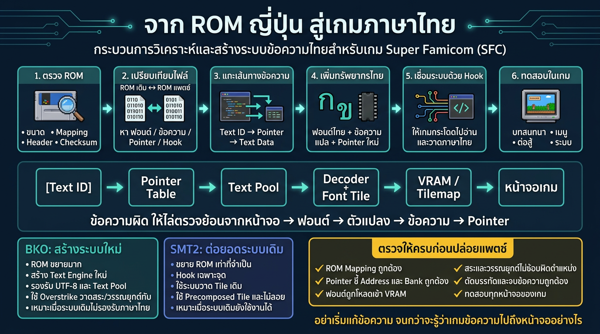
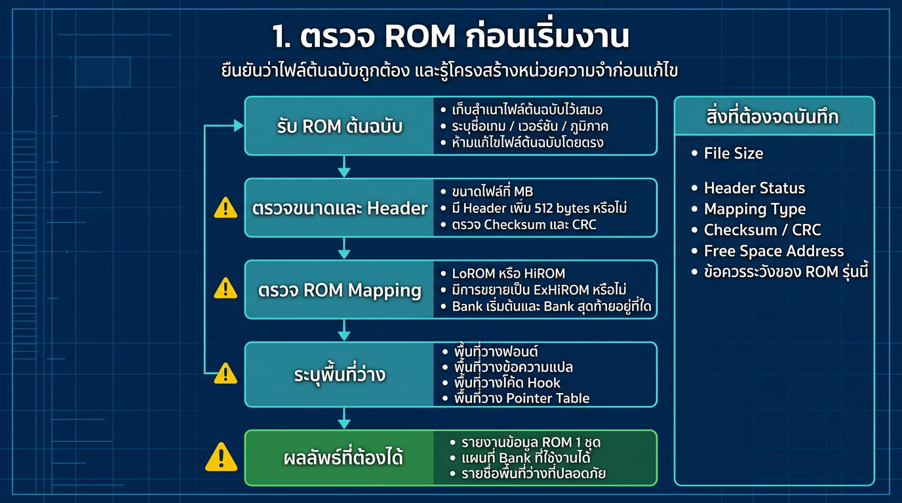
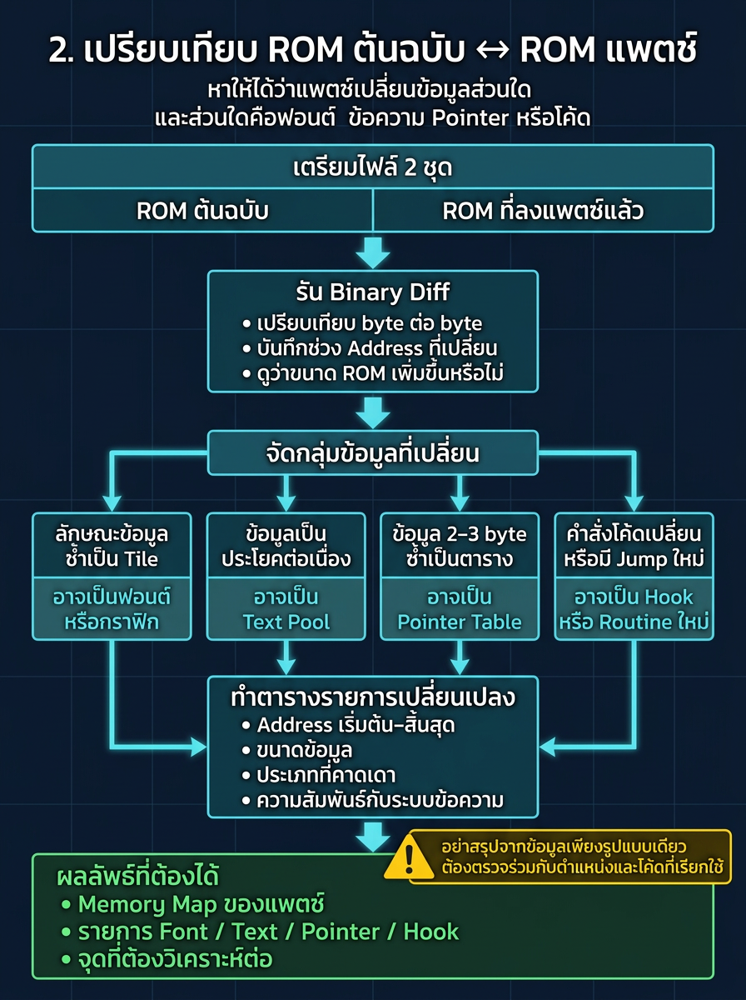
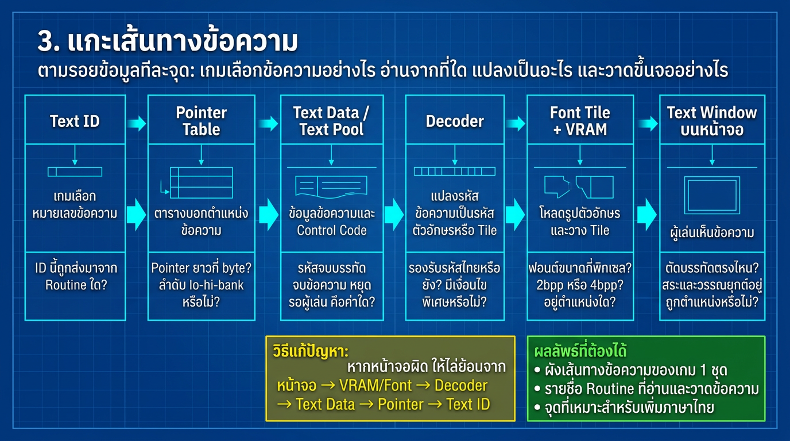
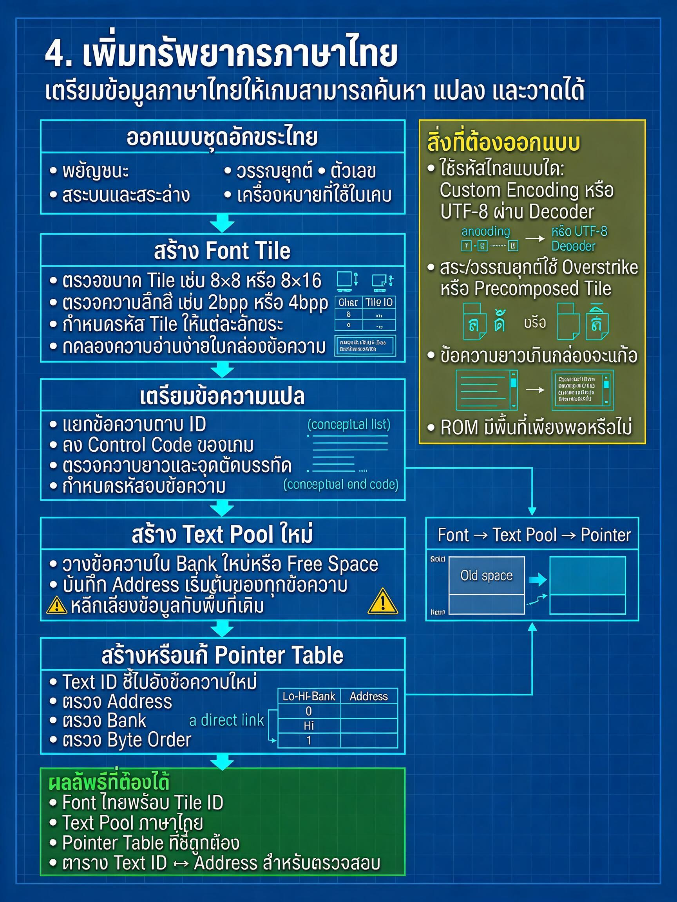
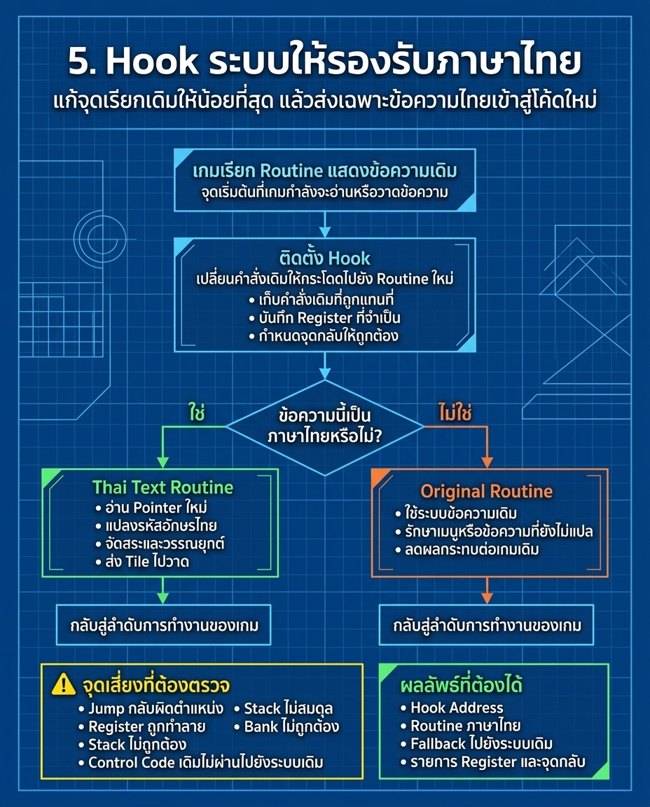
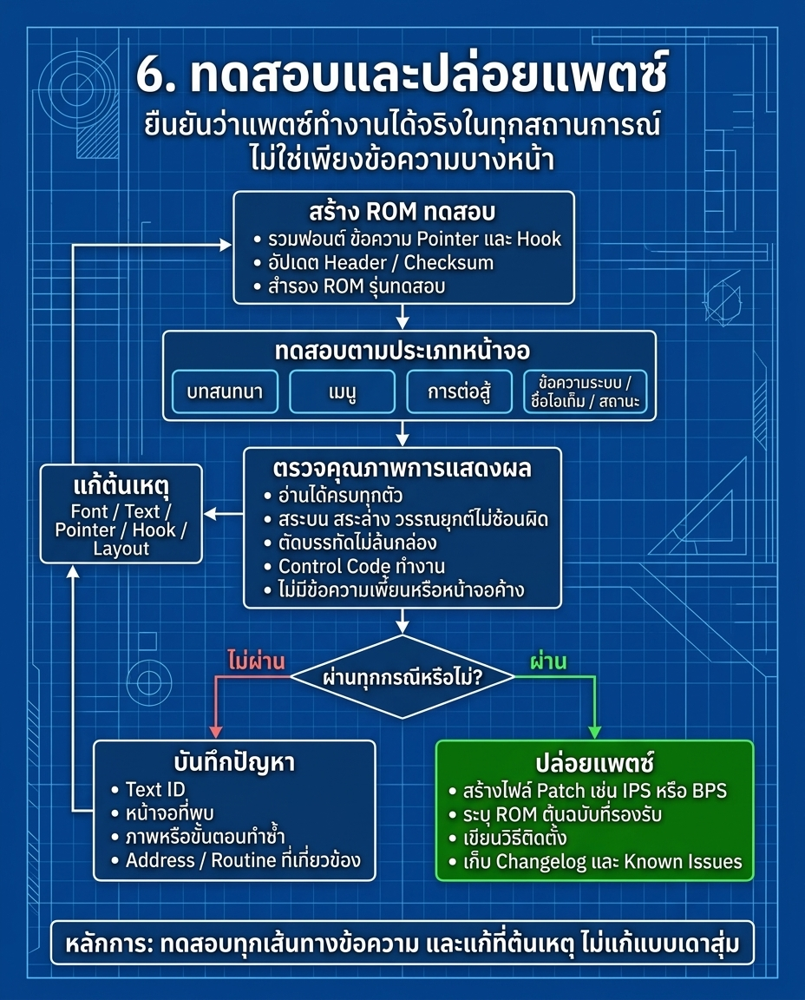

1. ทำไมต้องดู ROM กับ ROM แพตช์ ร่วมกัน
งานแปลเกมภาษาไทยบนคอนโซลยุคเก่าไม่ได้เป็นแค่ “เปิดไฟล์ ROM แล้วเปลี่ยนข้อความตรง ๆ” แต่คือการทำความเข้าใจว่า เกมเก็บข้อมูลแบบไหน และ คำสั่งในเกมเรียกข้อมูลนั้นมาวาดบนหน้าจออย่างไร
ROM ต้นฉบับคือ “ต้นแบบดั้งเดิม” ของเกม ส่วน ROM แพตช์คือ “เวอร์ชันที่ถูกปรับเปลี่ยนหรือเพิ่มข้อมูลใหม่” เช่น มีฟอนต์ภาษาไทย, มี pointer ใหม่, มี routine ใหม่, หรือมีพื้นที่ว่างใหม่ถูกใช้เพื่อเก็บข้อความทดแทนหรือข้อความเพิ่มเติม
หากเราเปิดดูแต่ ROM ตัวเดียวหรือ ROM แพตช์ตัวเดียวอย่างลำพัง จะเห็นเพียง “ข้อมูลเงียบ ๆ” ที่ไม่บอกว่าข้อมูลที่เปลี่ยนไปนั้นเกี่ยวข้องกับอะไรบนหน้าจอหรือโค้ดของเกมอย่างไร

2. ROM ต้นฉบับ vs ROM แพตช์: ความต่างที่สำคัญ
เป็นโครงสร้างดั้งเดิมของเกมก่อนมีการดัดแปลง มีข้อมูลสำคัญ เช่น Pointer Table, Text Pool, Control Code, Font Tile, Bank, Routine ที่ใช้ในการวาดข้อความ
เป็นเวอร์ชันที่มีการเปลี่ยนข้อมูลหรือโค้ด เช่น เพิ่มชุดอักขระไทย, ย้ายข้อความไปเก็บใน free space, เปลี่ยน pointer, Hook routine, หรือใช้ bank ใหม่
เมื่อเทียบกัน เราจะสรุปได้ 3 เรื่องหลักทันที:
- ตำแหน่งที่ข้อมูลเปลี่ยนไป อยู่ที่ตรงไหนใน ROM
- ข้อมูลที่เปลี่ยนไป นั้นเป็นฟอนต์, Text Pool, Pointer, หรือโค้ดวาดข้อความ
- สิ่งที่เปลี่ยน นั้นเกี่ยวข้องกับหน้าจอหรือ mechanic ใดในเกม

3. เปรียบเทียบข้อมูลที่เปลี่ยน: ใช้สัญญาณให้ตรง
| ลักษณะข้อมูล | สันนิษฐานเบื้องต้น | สิ่งที่ต้องตรวจต่อ |
|---|---|---|
| ไบต์ซ้ำเป็นบล็อกใหญ่ | ฟอนต์หรือ tile graphics | ขนาด tile, bank, VRAM, palette, การโหลดลงหน้าจอ |
| ข้อมูลต่อเนื่องเป็นประโยค/ข้อความ | Text Pool หรือ script data | encoding, pointer reference, control code, word wrap |
| ชุด 2–3 ไบต์เรียงกัน | Pointer Table | Address, bank, endian, ลำดับเรียกข้อมูล |
| คำสั่งหรือ jump ถูกแทนที่ | Hook หรือ routine ใหม่ | register, stack, jump-back, fallback, security-check |
| ROM เล็กลง/ขยายขึ้น | free space หรือ bank ใหม่ | ข้อมูลถูกย้ายไปไหน, มีการระบุ Bank/Address ใหม่หรือไม่ |

4. เส้นทางข้อมูลแบบจริง: การอ่าน ROM เป็นระบบ ไม่ใช่แค่ไบต์
สิ่งที่นักแปลเกมต้องเห็นคือ “ข้อความไม่ได้วิ่งโดยตรงจาก ROM ไปแสดงบนหน้าจอ” แต่ผ่านหลายชั้นข้อมูลก่อน:
ถ้าเรารู้ว่า ROM ต้นฉบับทำงานแบบนี้ เราก็จะรู้ว่า ROM แพตช์ที่มีข้อมูลใหม่ถูกแทรกเข้ามา “ต้องเชื่อมต่อกับชั้นไหน”
- ถ้า pointer เปลี่ยน: ต้องดูว่าชี้ไปยัง address ใหม่จริงหรือไม่
- ถ้าฟอนต์ขยาย: ต้องดูว่าถูกโหลดเข้าระบบ VRAM/CHR อย่างไร
- ถ้าข้อความยาวขึ้น: ต้องดูว่าต้องมี word wrap, line wrap, หรือ buffer ใหม่
- ถ้ารoutine ถูก Hook: ต้องดูว่ามี fallback หรือ save/restore register หรือไม่

5. ทำไม “เพิ่มฟอนต์/Pointer/Hook” จึงต้องใช้วิธีเดียวกัน
งานแปลไทยไม่ได้จบแค่ “แปลงข้อความให้เป็นไทยแล้วติดลง ROM” แต่ต้องรักษาว่า:
- Text ID ยังชี้ข้อมูลที่ถูกต้องหรือยัง
- Pointer ยังอ้างถึง address และ bank ที่ถูกต้องหรือไม่
- Text Pool มีพื้นที่เพียงพอ หรือจำเป็นต้องย้าย/ขยายใหม่
- Font Tile อยู่ในตำแหน่งที่เกมสามารถโหลดและวาดได้จริงไหม
- Hook ถูกฝังลงใน routine เดิมอย่างปลอดภัยหรือไม่


6. วิธีใช้ ROM แพตช์เพื่อทำงานแปลไทยแบบมีระบบ
ถ้าเรามี ROM แพตช์หรือ ROM ที่มีการแก้ไขแล้ว วิธีที่เหมาะที่สุดไม่ใช่ “เอาข้อมูลไปแปลแล้วคาดว่าเกมจะแสดงออกมา” แต่ควรทำตามลำดับต่อไปนี้:
ออกแบบระบบและดูว่าข้อมูลใน ROM ถูกเก็บไว้ตรงไหน
หา “ช่วงที่เปลี่ยน” และสิ่งที่ปลาเปลี่ยนจริง
Text / Pointer / Font / Control code / Hook
ปรับ pointer, font, text pool ให้สอดคล้องกัน
สร้าง Hook หรือ trampoline ให้งานเดิมยังทำงาน
เช็กทุกหน้าจอจนกว่าภาพและข้อความจะถูกต้อง
7. กฎ 5 ข้อที่ควรจำเมื่อเจอ ROM แพตช์
- อย่าอ่าน ROM แบบคนดูสรุปทางเดียว: แม้ข้อมูลดูเป็นฟอนต์หรือข้อความก็ยังต้องดูชนิดของ routine ที่เรียกมัน
- อย่าเชื่อ “ค่าที่เปลี่ยน” แบบไม่ตรวจ: ควรดูว่าช่วงข้อมูลนั้นมีอิทธิพลต่อระบบอะไรบ้าง
- อย่าคิดว่า pointer = ข้อความเสมอ: pointer เป็นตัวชี้อ้างอิง ไม่ใช่ข้อมูลภาษา
- อย่าละเลย Hook: ถ้าเกมดัดแปลง routine เดิมเพื่อวาดข้อความหรือรองรับกราฟิกใหม่ ต้องจัดการ save/restore register และ jump back ให้ถูกต้อง
- อย่าเริ่มจาก “แปลทั้งเกม”: ใช้ 1–2 ประโยค และ 1 หน้าจอแสดงผลที่ชัดเจนก่อน แล้วค่อยขยายออก
8. สถานะความถูกต้องในการทดสอบ
การปล่อยแพตช์ที่ดีต้องมีจุดสิ้นสุดที่ชัดเจน: เกมยังทำงานตามลำดับเดิม, ข้อความเปลี่ยนเป็นภาษาไทยที่อ่านง่าย, หน้าใดหน้าหนึ่งไม่เสีย, ระบบไม่พังเมื่อสลับประโยคยาว หรือเรียกกลับหน้าจอ
- ข้อความไม่ล้นกล่อง
- สระและวรรณยุกต์ไม่ชนกัน
- Pointer ไม่เสีย
- Hook ไม่ทำให้เกมค้างหรือข้ามคำสั่ง
- ทั้งเกมที่มีข้อความยาวและข้อความสั้นยังแสดงได้เป็นปกติ

9. สรุป
ROM กับ ROM แพตช์เป็นสองสิ่งที่เหมือนกันในแง่การวิเคราะห์ข้อมูล: ทั้งคู่เป็นเกมเดียวกันที่ถูกดูในมุมต่างกันเท่านั้น
เมื่อนักแปลเกมเห็น “ความต่าง” ระหว่าง ROM เดิมและ ROM แพตช์แล้ว การทำงานที่ถูกต้องคือไม่หยุดที่ “พบว่าเปลี่ยนตรงไหน” แต่ต้องต่อไปว่า “เปลี่ยนตรงนั้นไปทำให้เกิดอะไรขึ้นกับระบบเกม” และ “ต้องปรับอะไรบ้างให้ระบบยังทำงานตามเดิม”